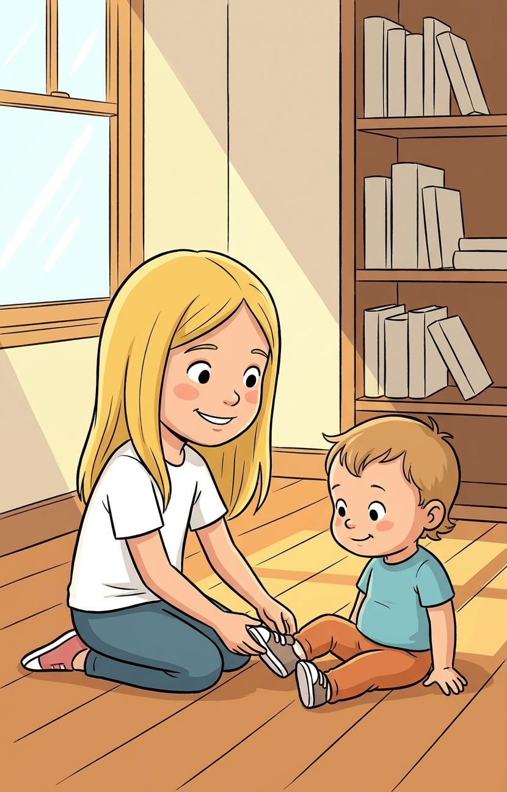
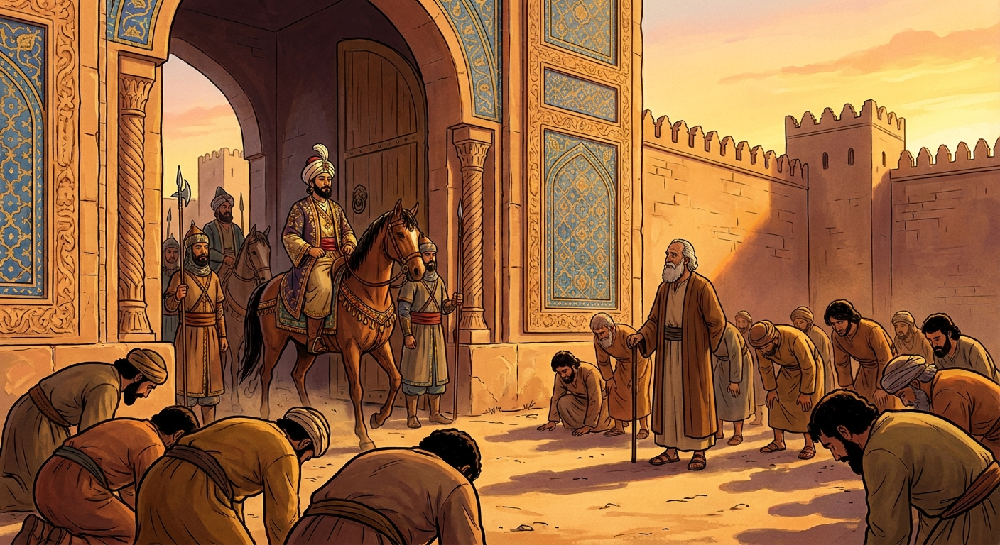
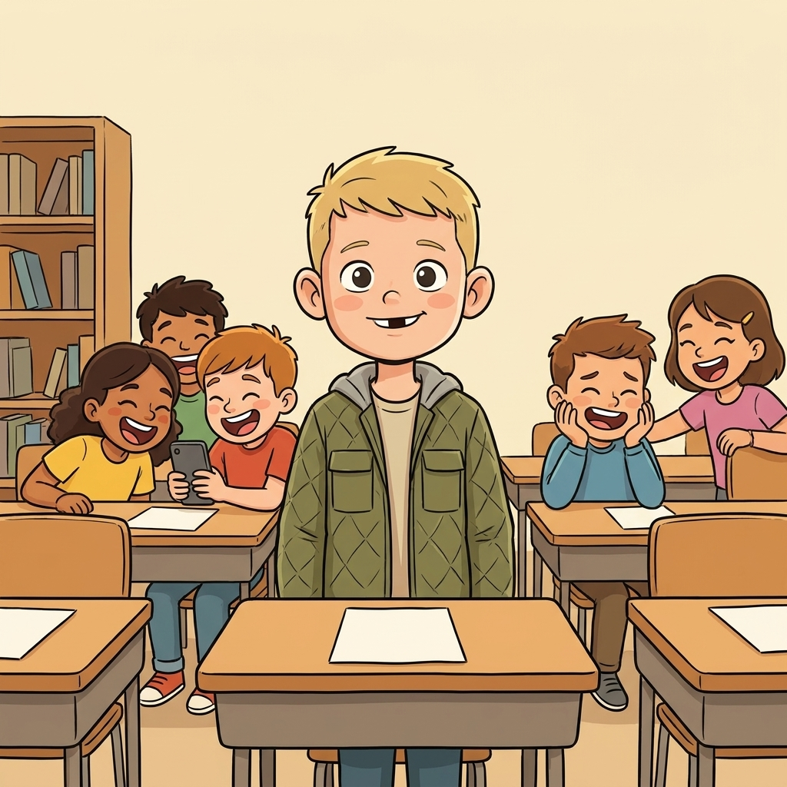
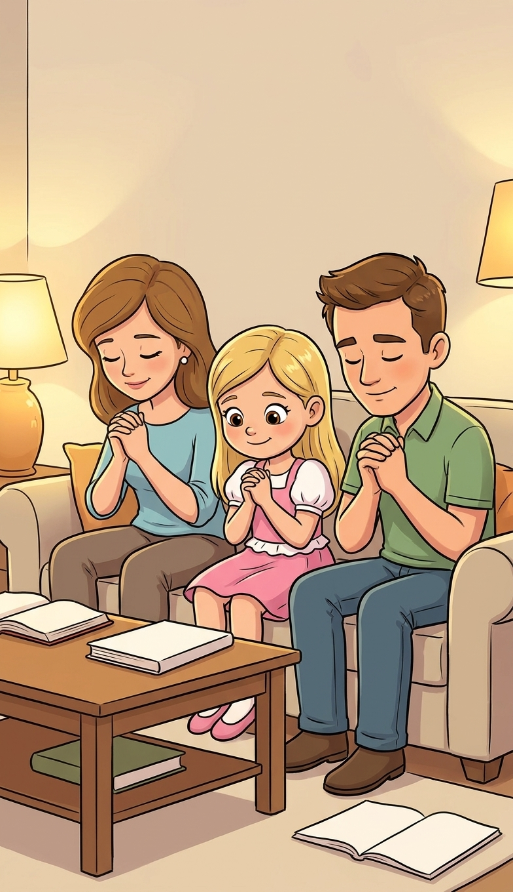
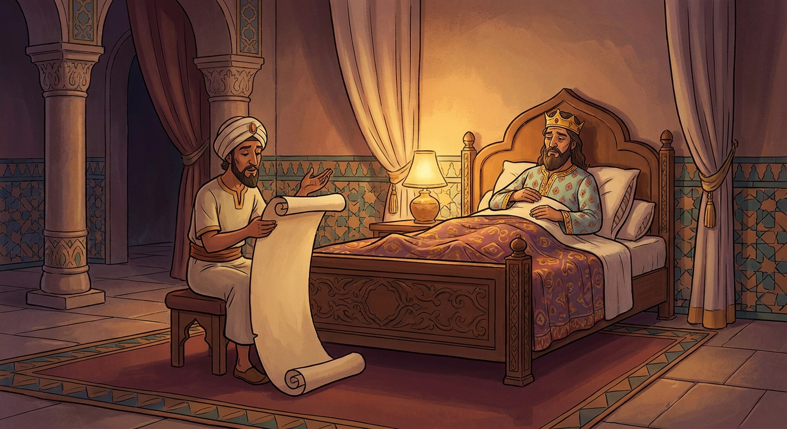
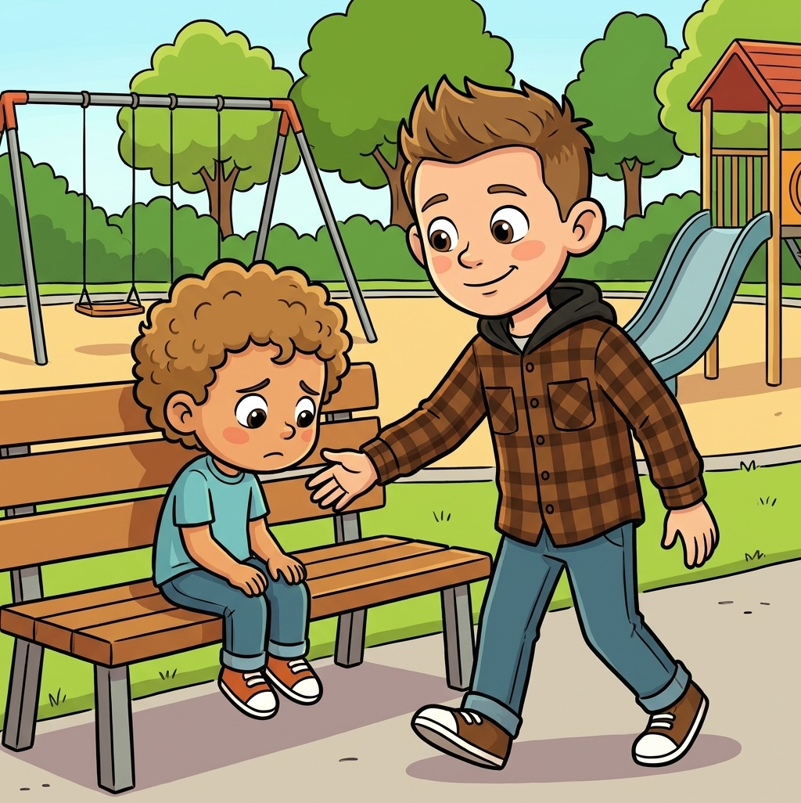
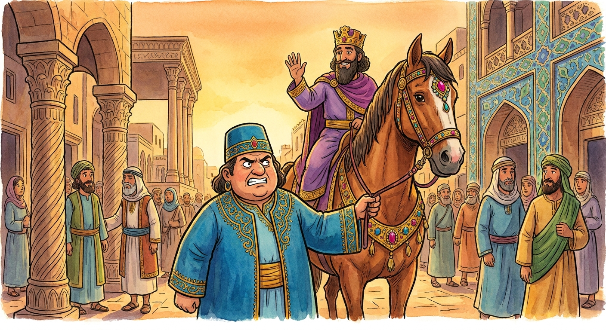
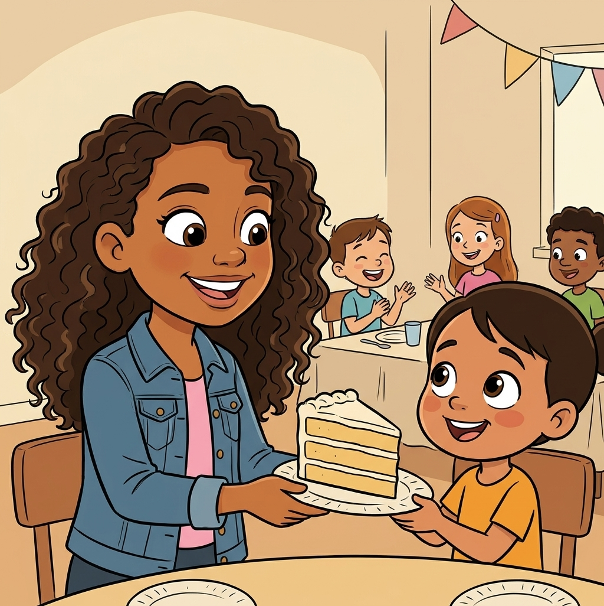

Esther 4:14 · "Who knoweth whether thou art come to the kingdom for such a time as this?"
Esther 1-10 · Come Follow Me, August 3 to 9Primary (9-year-olds), Elk Ridge 15th Ward~28 minNo supplies needed
Objective. An orphan girl raised by her cousin ends up queen of the largest empire on earth, and years later that turns out to be the only reason her people survive. The kids should walk out able to say three things: God put me where I am on purpose, being brave usually means being scared and doing it anyway, and God is working even when I cannot see Him. That last one is the whole reason this book is strange, and step 5 is built to land it.
↩ Last week / this week
Last week in Ezra and Nehemiah we followed the people who went home from Babylon to rebuild. Here is the part that is easy to miss: not everybody went. Thousands of Jews stayed behind, scattered across the Persian empire, living as a small minority a thousand miles from Jerusalem. Esther is their story. It happens right in the middle of last week's timeline, just in a completely different place.
Last weekHome to build
→
MeanwhileStayed in Persia
→
TodayEsther crowned
→
TodayHaman's law
→
TodayA nation saved
Nobody in this story knows they are in a rescue. They find out at the end.
01
The story so far (quick review)
~2 min
Warm-up: Two questions from last week. Tap the answer you think is right.
1. People kept inviting Nehemiah to come down off the wall. What did he say back, four times in a row?
Same answer, all four times. He was not being rude. He was busy, and he had already decided what he was building.
2. How long did it take to rebuild the entire wall around Jerusalem?
Fifty two days, built by perfume makers and goldsmiths and a dad working next to his daughters. None of them were wall experts.
Bridge into today
Those people went home. Today we follow the ones who stayed. And there is something strange about the book we are reading: it is the only book in the whole Bible that never once says the word "God." Not a single time. Keep that in your pocket. We are coming back to it.
02
An orphan girl in a palace
~4 min
Her name is Hadassah, and everyone calls her Esther. Both her parents are dead. Her older cousin Mordecai (say it: MOR-duh-kye) takes her in and raises her as his own daughter, which is the first quietly good thing in this book and it is easy to skip past.
Then the king of Persia, a man named Ahasuerus who rules 127 provinces, needs a new queen. Out of every young woman in the empire, he picks Esther. She goes from an ordinary house to a crown.
And Mordecai tells her one thing: do not tell anyone you are Jewish. Not yet. She does not know why. She does it anyway.
"And he brought up Hadassah, that is, Esther, his uncle's daughter: for she had neither father nor mother… Esther had not shewed her people nor her kindred: for Mordecai had charged her that she should not shew it… And the king loved Esther above all the women… so that he set the royal crown upon her head."
🔎 Focus question
Mordecai did not have to take her in. He had his own life. Who in your family needs somebody to look out for them right now, and what would that actually look like this week?

AlydaMordecai raised a girl who was not his own daughter. Most of the great stuff in this book starts with somebody helping family.
03
One man who will not bow
~4 min
The king promotes a man named Haman (say it: HAY-man) to be the second most powerful person in the empire, and orders everyone to bow when he walks by. Everyone does. Everyone except Mordecai, who just stands there.
Watch how fast this goes bad. Haman does not get annoyed. He gets full of wrath. And then he decides that being angry at one man is not enough, so he asks the king for a law to destroy every Jewish person in all 127 provinces. Because of one man who would not bow.

Everybody in the street bowed except one man, and that is where all the trouble in this book starts.
"But Mordecai bowed not, nor did him reverence… And when Haman saw that Mordecai bowed not… then was Haman full of wrath… wherefore Haman sought to destroy all the Jews that were throughout the whole kingdom."
🔎 Focus question
Standing still while a whole crowd bows takes more guts than yelling. When is the last time you were the only one not doing something? What made it hard?
Ask the class
Notice what Haman's pride actually did to him. He had money, power, and the king's ear, and he told his wife that all of it meant nothing as long as one man at the gate would not bow. He had almost everything and could not enjoy any of it, because he was counting the one person who would not clap for him.

BraxtonHe is not making a speech about it. He is just not joining in. That is usually what courage looks like at nine.
04
"If I perish, I perish"
~7 min
Mordecai gets word to Esther: there is a law now, and our whole people are going to be killed. You have to go to the king.
And Esther explains the problem, which is a real one. In Persia, walking into the king's inner court without being called is a death sentence. There is one exception: if the king holds out his golden scepter, you live. And she adds a detail that tells you everything about how alone she feels: he has not called for me in thirty days.
Then Mordecai sends back the sentence this whole lesson is named after.
Esther 4:14
"And who knoweth whether thou art come to the kingdom for such a time as this?"
Say this part slowly
He is not saying "you got lucky." He is saying: what if the entire reason you are standing where you are standing is this exact moment? All those years, the crown, the palace, the secret. What if it was for right now?
Activity · you are Esther
You have to decide today
Going in uninvited can get you killed. Staying quiet lets your people die. Pick one.
🏃
Run in right now, alone
No time to waste. Just go.
🙏
Ask everyone to fast for three days first
Then go.
Day 1Fasting
Day 2Fasting
Day 3She goes in
What does Esther do?
She fasted first, and she did not fast alone. Three days, no food and no water, her and her maidens and every Jew in the city all at once. Then she put on her royal robes and walked in. Fasting did not make her less scared. Look at what she says right before she goes: "if I perish, I perish." She went in fully expecting it might not work. That is what brave actually is.
"Go, gather together all the Jews that are present in Shushan, and fast ye for me, and neither eat nor drink three days, night or day: I also and my maidens will fast likewise; and so will I go in unto the king, which is not according to the law: and if I perish, I perish."
🔎 Focus question
When we fast, we are doing the same thing Esther did: telling Heavenly Father that something matters more to us than being comfortable. What is one specific thing you could fast for next fast Sunday? Not a general one. A real one, with a name on it.
"And it was so, when the king saw Esther the queen standing in the court, that she obtained favour in his sight: and the king held out to Esther the golden sceptre… Then said the king unto her, What wilt thou, queen Esther?"
🔎 Focus question
The scepter went out. She lived. Does that mean the fasting worked, or does it mean she got lucky? How would you tell the difference?

DannieShe asked a whole city to fast with her. Nobody in this story does the brave thing by themselves.
✋ Object lesson · nothing to bring
Where is your palace?
Esther's palace was not a reward. It was a position. Somebody has to be standing there, and it happened to be her.
You'll need
Nothing. Just the class and their own week.
How to run it: Go around the circle. Each kid names one place they will be this week that nobody else in this room will be. Their classroom. Their soccer team. Their cousin's house. The bus. Be specific and do not let them off with "school," because five of them go to school. Push for the one that is only theirs. After each answer, the whole class says together: "for such a time as this." Then ask the follow up that makes it land: who is going to be there with you who might need something? Nobody else from this class is going to be standing where they are standing. That is the whole point of Esther, and it is true of a nine-year-old on a school bus.
05
The night the king could not sleep
~6 min
Esther invites the king and Haman to dinner. Twice. She does not ask for anything the first night, which drives everybody a little crazy including the reader.
Meanwhile Haman goes home so pleased with himself that he builds a gallows seventy five feet high in his own yard, planning to ask the king in the morning for permission to hang Mordecai on it.
And that same night, a bunch of things happen that all look like accidents. Tap each one.
Activity · the chain
Eight coincidences
Every one of these is a small random thing. Tap them in order and watch what they add up to.
1
The old queen refuses to come when the king calls, and loses her crown. There is suddenly an opening.
Esther 1
2
Out of every young woman in 127 provinces, the king picks the Jewish orphan.
Esther 2:17
3
Mordecai tells her to keep her people secret, for no stated reason.
Esther 2:10
4
Mordecai happens to overhear two guards plotting to kill the king, and reports it.
Esther 2:21-22
5
It gets written down in the palace record book. Then nobody ever thanks him or pays him.
Esther 2:23
6
Years later, on the exact night the gallows goes up, the king cannot fall asleep.
Esther 6:1
7
He asks for the record book to be read out loud. Of all the pages, they read the one about Mordecai.
Esther 6:2
8
At that exact moment Haman walks in to ask about the gallows, and the king asks him first how to honor a man he wants to reward.
Esther 6:4-6
0 of 8. Tap the first one.
Haman spent that morning leading Mordecai through the streets on the king's own horse, shouting his praises. The gallows he built got used on Haman himself. Now here is the thing worth stopping on: the book of Esther never once says the word God. Not one time in ten chapters. No miracles, no angels, no prophet. Just a stack of coincidences that happen to be too well timed to be coincidences. Sometimes that is exactly what it looks like from the inside of your own life.

The whole rescue turns on a king who could not fall asleep. That is as close as this book ever comes to naming who did it.
"On that night could not the king sleep, and he commanded to bring the book of records of the chronicles; and they were read before the king. And it was found written, that Mordecai had told of Bigthana and Teresh… And the king said, What honour and dignity hath been done to Mordecai for this? Then said the king's servants… There is nothing done for him."
🔎 Focus question
Mordecai did the right thing years earlier and got nothing for it. Then it turned out to be the thing that saved everybody. Have you ever done something good that nobody noticed? Does it still count?

ColeMordecai was in the right place because he was paying attention at the gate. Mostly that is all it takes.
06
She finally says it out loud
~4 min
Second dinner. The king asks again what she wants. And Esther, who has kept a secret her entire adult life, tells the truth in a room with the two most dangerous men in the empire in it.
"Let my life be given me at my petition, and my people at my request: For we are sold, I and my people, to be destroyed… Then the king Ahasuerus answered and said unto Esther the queen, Who is he, and where is he, that durst presume in his heart to do so? And Esther said, The adversary and enemy is this wicked Haman."
🔎 Focus question
She had to say "my people" out loud, knowing the king had already signed the law against them. What is something true about you that takes a little courage to say out loud?

Haman built the gallows. Haman led the horse. Pride keeps handing people the exact thing they were trying to avoid.
Haman is finished, the law gets answered with a second law that lets the Jews defend themselves, and Mordecai ends up second in the kingdom. The people throw a feast that they still celebrate today, thousands of years later. It is called Purim, and it exists because one scared young woman walked through a door.
Lexi"If I perish, I perish." She was scared the whole time and she went in anyway. That still counts as brave.

ZaleaHaman needed everyone to bow to him and it made him miserable. This is the opposite of Haman.
You are already standing somewhere nobody else is. Esther did not get sent on a mission. She was already in the palace. Look around where you already are.
Brave means scared and going anyway. "If I perish, I perish" is not confidence. It is a decision made without knowing how it ends.
Fast for something specific. Esther gave the fast a job. Give yours one, with a real name on it.
Pride is never full. Haman had everything and one man not bowing ruined all of it. Watch for that feeling in yourself.
God does not always sign His work. Ten chapters, no mention of Him, and He is on every page. Your week probably looks the same.
Brief testimony: Heavenly Father puts us in places on purpose, and He is working in your life even in the weeks it feels like nothing is happening. Close with prayer.